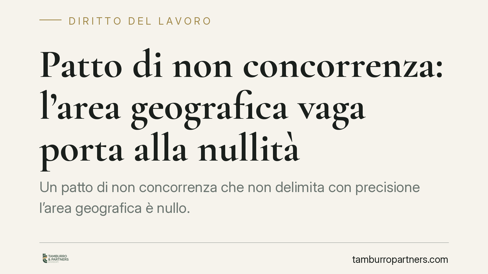

Patto di non concorrenza: l'area geografica vaga porta alla nullità
Un patto di non concorrenza che non delimita con precisione l'area geografica è nullo. Lo ha ribadito il Tribunale di Milano, in una pronuncia che riguarda un private banker ma vale per qualunque rapporto. La certezza territoriale non è un dettaglio formale: è condizione di validità del vincolo e di tutela della libertà professionale del lavoratore.

Il caso
Il Tribunale di Milano ha dichiarato nullo il patto di non concorrenza sottoscritto da un private banker perché l'area geografica del divieto era definita in modo vago. La clausola non consentiva di stabilire con esattezza dove il lavoratore non potesse operare una volta cessato il rapporto.
La decisione non introduce un principio nuovo, ma lo applica con rigore: un vincolo che limita la futura attività professionale deve essere comprensibile e misurabile nei suoi confini. Se il lavoratore non sa, leggendo il contratto, in quale territorio è effettivamente vincolato, il patto perde la sua ragione di legittimità.
Inquadramento normativo
Il punto di riferimento è l'articolo 2125 del Codice civile. La norma richiede, a pena di nullità, che il patto di non concorrenza risponda a quattro requisiti: forma scritta, previsione di un corrispettivo a favore del lavoratore, limiti di oggetto (le attività vietate), limiti di tempo e limiti di luogo.
Il vincolo, inoltre, non può superare i cinque anni per i dirigenti e i tre anni negli altri casi. Sul piano del territorio, la giurisprudenza ha progressivamente chiarito che il limite di luogo deve essere determinato o quanto meno determinabile: non basta un riferimento generico (ad esempio "tutto il territorio nazionale" senza correlazione con l'attività svolta) se l'effetto è quello di azzerare la possibilità del lavoratore di trovare un nuovo impiego nel proprio settore.
Il criterio guida è il bilanciamento. Il datore di lavoro ha un interesse legittimo a proteggere la propria clientela e il proprio know-how; il lavoratore conserva il diritto, costituzionalmente rilevante, di lavorare e di mettere a frutto le proprie competenze. Una clausola territoriale vaga rompe questo equilibrio, perché comprime la libertà professionale senza un perimetro certo.
Implicazioni pratiche
La pronuncia ha effetti concreti per entrambe le parti del rapporto.
Per il datore di lavoro, un patto redatto in modo approssimativo è carta straccia: la nullità è totale e travolge l'intero vincolo, lasciando l'azienda priva di tutela proprio nel momento in cui il professionista esce e potrebbe portare con sé clientela e relazioni. Il corrispettivo eventualmente già versato, inoltre, può essere oggetto di contestazione.
Per il lavoratore, la sentenza conferma uno strumento difensivo: di fronte a un patto dai confini indefiniti, è possibile far valere la nullità e riacquistare piena libertà operativa. Questo vale a maggior ragione per figure come i private banker, la cui attività è strettamente legata a un portafoglio di clienti e a un'area di riferimento.
La vaghezza, in sintesi, non protegge nessuno: espone l'azienda al rischio di vedersi annullare il vincolo e crea incertezza nel lavoratore sul reale ambito del divieto.
Cosa fare in concreto
- Delimitate il territorio in modo verificabile. Indicate regioni, province o un raggio chilometrico misurabile, coerenti con l'area in cui il lavoratore ha effettivamente operato.
- Collegate l'estensione geografica all'oggetto. Più ampio è il territorio, più alto deve essere il corrispettivo e più solida la giustificazione legata all'attività concreta.
- Verificate la proporzionalità complessiva. Oggetto, tempo, luogo e compenso devono comporre un equilibrio sostenibile: un solo elemento sproporzionato può travolgere il patto.
- Rivedete i modelli contrattuali esistenti. Le clausole standard, replicate da anni, sono spesso il punto debole. Consigliamo una revisione mirata prima di nuove assunzioni o cessazioni.
- Documentate il corrispettivo. Previsione, importo e modalità di pagamento devono risultare chiari nel testo, perché la loro assenza è autonoma causa di nullità.
La cura nella redazione non è un formalismo. È la condizione perché il vincolo regga a un eventuale vaglio giudiziale e perché entrambe le parti sappiano, fin dalla firma, quali sono i reali confini dell'impegno assunto.
Disclaimer
Contributo informativo a cura di Tamburro & Partners - Avv. Giuseppe Tamburro. Non costituisce parere legale.
Ogni storia di lavoro ha i suoi tempi.
Se gestisci HR e vuoi un confronto su contenzioso, ispezioni o licenziamenti, scrivi allo studio. Ti rispondiamo entro un giorno lavorativo.